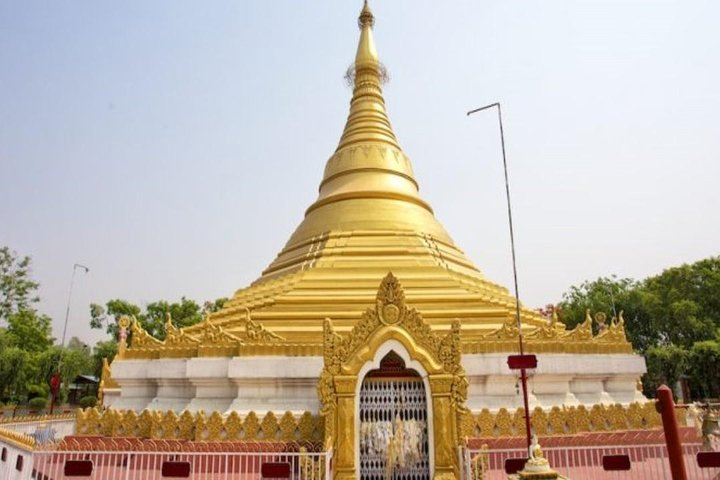

The Birthplace of Gautama Buddha
Lumbini is one of the most sacred places in the world for Buddhists. It is the birthplace of Gautama Buddha and is visited by pilgrims and tourists from many countries. The place is peaceful and full of spiritual importance.

Lumbini is important not only for Buddhists but also for visitors who want peace, calm and moral values. People come here for meditation, prayers and to learn about Buddha and his teachings.